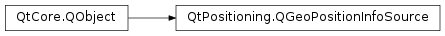

QGeoPositionInfoSource¶
Inherited by: QNmeaPositionInfoSource
Synopsis¶
Functions¶
- def
preferredPositioningMethods() - def
sourceName() - def
updateInterval()
Virtual functions¶
- def
error() - def
lastKnownPosition([fromSatellitePositioningMethodsOnly=false]) - def
minimumUpdateInterval() - def
requestUpdate([timeout=0]) - def
setPreferredPositioningMethods(methods) - def
setUpdateInterval(msec) - def
startUpdates() - def
stopUpdates() - def
supportedPositioningMethods()
Signals¶
- def
error(arg__1) - def
positionUpdated(update) - def
updateTimeout()
Static functions¶
- def
availableSources() - def
createDefaultSource(parent) - def
createSource(sourceName, parent)
Detailed Description¶
The
PySide2.QtPositioning.QGeoPositionInfoSourceclass is an abstract base class for the distribution of positional updates.The static function
QGeoPositionInfoSource.createDefaultSource()creates a default position source that is appropriate for the platform, if one is available. Otherwise,PySide2.QtPositioning.QGeoPositionInfoSourcewill check for available plugins that implement thePySide2.QtPositioning.QGeoPositionInfoSourceFactoryinterface.Users of a
PySide2.QtPositioning.QGeoPositionInfoSourcesubclass can request the current position usingPySide2.QtPositioning.QGeoPositionInfoSource.requestUpdate(), or start and stop regular position updates usingPySide2.QtPositioning.QGeoPositionInfoSource.startUpdates()andPySide2.QtPositioning.QGeoPositionInfoSource.stopUpdates(). When an update is available,PySide2.QtPositioning.QGeoPositionInfoSource.positionUpdated()is emitted. The last known position can be accessed withPySide2.QtPositioning.QGeoPositionInfoSource.lastKnownPosition().If regular position updates are required,
PySide2.QtPositioning.QGeoPositionInfoSource.setUpdateInterval()can be used to specify how often these updates should be emitted. If no interval is specified, updates are simply provided whenever they are available. For example:// Emit updates every 10 seconds if available QGeoPositionInfoSource *source = QGeoPositionInfoSource::createDefaultSource(0); if (source) source->setUpdateInterval(10000);To remove an update interval that was previously set, call
PySide2.QtPositioning.QGeoPositionInfoSource.setUpdateInterval()with a value of 0.Note that the position source may have a minimum value requirement for update intervals, as returned by
PySide2.QtPositioning.QGeoPositionInfoSource.minimumUpdateInterval().
-
class
PySide2.QtPositioning.QGeoPositionInfoSource(parent)¶ Parameters: parent – PySide2.QtCore.QObjectCreates a position source with the specified
parent.
-
PySide2.QtPositioning.QGeoPositionInfoSource.Error¶ The Error enumeration represents the errors which can occur.
Constant Description QGeoPositionInfoSource.AccessError The connection setup to the remote positioning backend failed because the application lacked the required privileges. QGeoPositionInfoSource.ClosedError The remote positioning backend closed the connection, which happens for example in case the user is switching location services to off. As soon as the location service is re-enabled regular updates will resume. QGeoPositionInfoSource.NoError No error has occurred. QGeoPositionInfoSource.UnknownSourceError An unidentified error occurred.
-
PySide2.QtPositioning.QGeoPositionInfoSource.PositioningMethod¶ Defines the types of positioning methods.
Constant Description QGeoPositionInfoSource.NoPositioningMethods None of the positioning methods. QGeoPositionInfoSource.SatellitePositioningMethods Satellite-based positioning methods such as GPS or GLONASS. QGeoPositionInfoSource.NonSatellitePositioningMethods Other positioning methods such as 3GPP cell identifier or WiFi based positioning. QGeoPositionInfoSource.AllPositioningMethods Satellite-based positioning methods as soon as available. Otherwise non-satellite based methods.
-
static
PySide2.QtPositioning.QGeoPositionInfoSource.availableSources()¶ Return type: list of strings Returns a list of available source plugins. This includes any default backend plugin for the current platform.
-
static
PySide2.QtPositioning.QGeoPositionInfoSource.createDefaultSource(parent)¶ Parameters: parent – PySide2.QtCore.QObjectReturn type: PySide2.QtPositioning.QGeoPositionInfoSourceCreates and returns a position source with the given
parentthat reads from the system’s default sources of location data, or the plugin with the highest available priority.Returns 0 if the system has no default position source, no valid plugins could be found or the user does not have the permission to access the current position.
-
static
PySide2.QtPositioning.QGeoPositionInfoSource.createSource(sourceName, parent)¶ Parameters: - sourceName – unicode
- parent –
PySide2.QtCore.QObject
Return type: Creates and returns a position source with the given
parent, by loading the plugin namedsourceName.Returns 0 if the plugin cannot be found.
-
PySide2.QtPositioning.QGeoPositionInfoSource.error()¶ Return type: PySide2.QtPositioning.QGeoPositionInfoSource.ErrorReturns the type of error that last occurred.
-
PySide2.QtPositioning.QGeoPositionInfoSource.error(arg__1) Parameters: arg__1 – PySide2.QtPositioning.QGeoPositionInfoSource.Error
-
PySide2.QtPositioning.QGeoPositionInfoSource.lastKnownPosition([fromSatellitePositioningMethodsOnly=false])¶ Parameters: fromSatellitePositioningMethodsOnly – PySide2.QtCore.boolReturn type: PySide2.QtPositioning.QGeoPositionInfoReturns an update containing the last known position, or a null update if none is available.
If
fromSatellitePositioningMethodsOnlyis true, this returns the last known position received from a satellite positioning method; if none is available, a null update is returned.
-
PySide2.QtPositioning.QGeoPositionInfoSource.minimumUpdateInterval()¶ Return type: PySide2.QtCore.int
-
PySide2.QtPositioning.QGeoPositionInfoSource.positionUpdated(update)¶ Parameters: update – PySide2.QtPositioning.QGeoPositionInfo
-
PySide2.QtPositioning.QGeoPositionInfoSource.preferredPositioningMethods()¶ Return type: PySide2.QtPositioning.QGeoPositionInfoSource.PositioningMethodsReturns the positioning methods set by
PySide2.QtPositioning.QGeoPositionInfoSource.setPreferredPositioningMethods().
-
PySide2.QtPositioning.QGeoPositionInfoSource.requestUpdate([timeout=0])¶ Parameters: timeout – PySide2.QtCore.intAttempts to get the current position and emit
PySide2.QtPositioning.QGeoPositionInfoSource.positionUpdated()with this information. If the current position cannot be found within the giventimeout(in milliseconds) or iftimeoutis less than the value returned byPySide2.QtPositioning.QGeoPositionInfoSource.minimumUpdateInterval(),PySide2.QtPositioning.QGeoPositionInfoSource.updateTimeout()is emitted.If the timeout is zero, the timeout defaults to a reasonable timeout period as appropriate for the source.
This does nothing if another update request is in progress. However it can be called even if
PySide2.QtPositioning.QGeoPositionInfoSource.startUpdates()has already been called and regular updates are in progress.If the source uses multiple positioning methods, it tries to get the current position from the most accurate positioning method within the given timeout.
-
PySide2.QtPositioning.QGeoPositionInfoSource.setPreferredPositioningMethods(methods)¶ Parameters: methods – PySide2.QtPositioning.QGeoPositionInfoSource.PositioningMethodsSets the preferred positioning methods for this source to
methods.If
methodsincludes a method that is not supported by the source, the unsupported method will be ignored.If
methodsdoes not include any methods supported by the source, the preferred methods will be set to the set of methods which the source supports.Note
When reimplementing this method, subclasses must call the base method implementation to ensure
PySide2.QtPositioning.QGeoPositionInfoSource.preferredPositioningMethods()returns the correct value.
-
PySide2.QtPositioning.QGeoPositionInfoSource.setUpdateInterval(msec)¶ Parameters: msec – PySide2.QtCore.int
-
PySide2.QtPositioning.QGeoPositionInfoSource.sourceName()¶ Return type: unicode
-
PySide2.QtPositioning.QGeoPositionInfoSource.startUpdates()¶ Starts emitting updates at regular intervals as specified by
PySide2.QtPositioning.QGeoPositionInfoSource.setUpdateInterval().If
PySide2.QtPositioning.QGeoPositionInfoSource.setUpdateInterval()has not been called, the source will emit updates as soon as they become available.An
PySide2.QtPositioning.QGeoPositionInfoSource.updateTimeout()signal will be emitted if thisPySide2.QtPositioning.QGeoPositionInfoSourcesubclass determines that it will not be able to provide regular updates. This could happen if a satellite fix is lost or if a hardware error is detected. Position updates will recommence if the data becomes available later on. ThePySide2.QtPositioning.QGeoPositionInfoSource.updateTimeout()signal will not be emitted again until after the periodic updates resume.On iOS, starting from version 8, Core Location framework requires additional entries in the application’s Info.plist with keys NSLocationAlwaysUsageDescription or NSLocationWhenInUseUsageDescription and a string to be displayed in the authorization prompt. The key NSLocationWhenInUseUsageDescription is used when requesting permission to use location services while the app is in the foreground. The key NSLocationAlwaysUsageDescription is used when requesting permission to use location services whenever the app is running (both the foreground and the background). If both entries are defined, NSLocationWhenInUseUsageDescription has a priority in the foreground mode.
-
PySide2.QtPositioning.QGeoPositionInfoSource.stopUpdates()¶ Stops emitting updates at regular intervals.
-
PySide2.QtPositioning.QGeoPositionInfoSource.supportedPositioningMethods()¶ Return type: PySide2.QtPositioning.QGeoPositionInfoSource.PositioningMethodsReturns the positioning methods available to this source.
-
PySide2.QtPositioning.QGeoPositionInfoSource.updateInterval()¶ Return type: PySide2.QtCore.int
-
PySide2.QtPositioning.QGeoPositionInfoSource.updateTimeout()¶
© 2018 The Qt Company Ltd. Documentation contributions included herein are the copyrights of their respective owners. The documentation provided herein is licensed under the terms of the GNU Free Documentation License version 1.3 as published by the Free Software Foundation. Qt and respective logos are trademarks of The Qt Company Ltd. in Finland and/or other countries worldwide. All other trademarks are property of their respective owners.